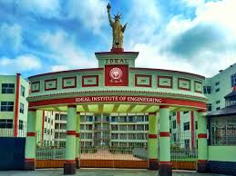

General Information: Established: 2010 Location: Kalyani, West Bengal, India. It's strategically located opposite the Kalyani Shilpanchal Railway Station. Type: Private, self-financed institute. Affiliation: Maulana Abul Kalam Azad University of Technology (MAKAUT), previously known as West Bengal University of Technology (WBUT). Approval: Approved by the All India Council for Technical Education (AICTE)
